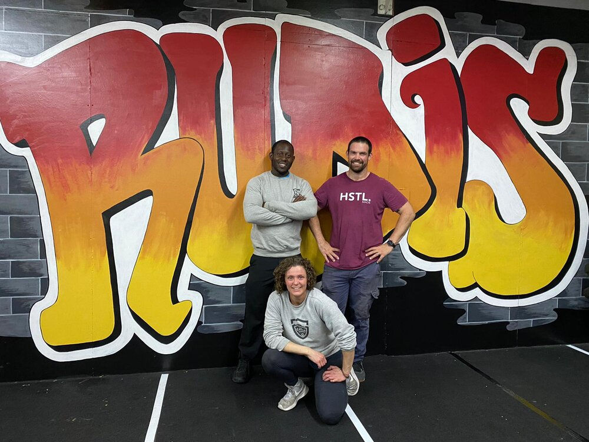

The team

Simon
The owner and head coach of the box is a highly skilled and knowledgeable individual with a passion for fitness and health. With a CrossFit Level 1 certification and a Strength & Conditioning Level 4 qualification, they bring a wealth of experience and expertise to their role. They are dedicated to helping their clients reach their full potential, whether it's through training for a competition, improving overall health and wellness, or simply increasing fitness levels.
Joanna
A highly qualified fitness professional, this former coach of CrossFit Rudis brings a wealth of expertise and experience to their role. With a Level 2 Fitness Instructor certification, a Level 3 Personal Trainer qualification, a CrossFit Level 1 Trainer certification, and a Level 4 Strength and Conditioning certification, they possess a diverse and comprehensive skill set. Their extensive training and experience make them a valuable asset to anyone looking to improve their fitness and reach their goals, whether it be through CrossFit, strength training, or personalized one-on-one coaching.
Mitch
An experienced and knowledgeable coach, this individual brings a wealth of fitness expertise to their role. Holding a CrossFit Level 1 Trainer certification and a British Weightlifting Level 2 qualification, they have a strong foundation in both functional fitness and weightlifting. With a Personal Trainer Level 3 certification and ongoing pursuit of a Strength & Conditioning Level 4 certification, they are dedicated to providing their clients with the highest quality of fitness guidance and support. Their combination of training and experience make them an excellent choice for anyone looking to reach their fitness goals.